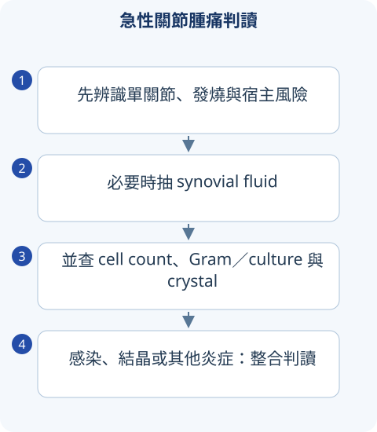

判讀圖解

1｜Vasculitis：按血管大小與器官
ANCA 與 complement 是線索；感染、藥物、腫瘤與非炎性血管病可能模仿。
| 類別 | 代表 | 線索 |
|---|---|---|
| Large vessel | GCA／Takayasu | GCA 高齡、頭痛／jaw claudication／視力；Takayasu 肢脈／血壓差。 |
| Medium vessel | PAN／Kawasaki | PAN 可系統性 ischemia，通常非 glomerulonephritis；Kawasaki 見兒科相關情境。 |
| Small：ANCA | GPA／MPA／EGPA | 耳鼻肺腎、pulmonary hemorrhage；EGPA 與 asthma／eosinophilia。 |
| Small：immune complex | IgA、cryoglobulinemic 等 | purpura、腎／GI、感染與 complement。 |
寬表格可左右捲動
複習提醒
懷疑 GCA 且有視覺危險時須緊急處置，不等 biopsy 才開始評估與治療。
2｜Inflammatory、mechanical 與感染／結晶
急性熱腫單關節需優先排 septic arthritis。
| 類型 | 特徵 | 檢查 |
|---|---|---|
| Inflammatory | 晨僵、休息痛、多系統 | 依 pattern、檢驗與影像。 |
| Mechanical／OA | 負重痛、短晨僵、典型分佈 | 骨贅、joint-space 與臨牀整合。 |
| Septic | 急性痛、腫、活動受限；發燒不一定有 | synovial fluid culture／cell／crystal，及早介入。 |
| Gout | MSU needle、negative birefringence | serum urate 可在發作時正常。 |
| CPPD | rhomboid、weak positive birefringence | chondrocalcinosis；代謝關聯依年齡病況。 |
寬表格可左右捲動
複習提醒
Joint fluid WBC 有範圍重疊；有 crystal 也可能合併 infection。
3｜Seronegative spondyloarthritis
Axial／peripheral、enthesitis、dactylitis 與關節外線索串聯。
| 疾病／面向 | 重點 |
|---|---|
| Axial SpA | inflammatory back pain、sacroiliitis；HLA-B27 不是單獨診斷。 |
| Psoriatic arthritis | psoriasis／nail、DIP、dactylitis，多種 pattern。 |
| Reactive arthritis | GI／GU infection 後；不是關節內一定能培養出病原。 |
| IBD-related arthritis | GI、眼、皮膚與 axial／peripheral 關係。 |
| 治療比較 | NSAID、exercise、DMARD／biologic 依疾病與部位；不能把 axial 和 peripheral 方案完全等同。 |
寬表格可左右捲動
4｜痛風：急性抗炎與長期降尿酸分開
痛風、單純 hyperuricemia、結石與 tophi 的治療情境不同。
| 面向 | 重點 |
|---|---|
| 急性發作 | colchicine／NSAID／glucocorticoid 依腎功能、交互作用與感染風險。 |
| Urate-lowering | 按適應症、風險與 shared decision 開始，低劑量起始逐步調整。 |
| 預防 | 開始 ULT 初期 flare prophylaxis 依個別情境；飲食與用藥共同檢視。 |
| Allopurinol 安全 | 留意 HLA-B*58:01 與嚴重皮膚反應風險；藥物交互作用不能漏。 |
寬表格可左右捲動
指引與公告補充
以下補充已依列出的版本核對；與 2020 年參考書的學習整理分開標示。
ACR Gout Guideline 2020
ULT 採 treat-to-target，常用 serum urate <6 mg/dL；allopurinol 為首選之一且可用於 CKD，需低劑量起始。漢族、韓國與泰國等高風險族羣開始前應考慮 HLA-B*58:01 檢測。 查閱來源
來源與版本
書籍學習來源：《國考分科詳解—醫學（三）》2020 年版，第 4 冊〈免疫・血液・腫瘤・家醫〉；本頁對應章節導讀位置為 PDF 第 63–102 頁（含封面，與書內印刷頁碼不同）。
依章節重寫比較與判讀重點；指引補充另列版本。圖解與情境練習為本站原創。核對日：2026/09/30。